1 - SD kart hazırlama
İlk önce https://www.raspberrypi.com/software/ bu siteden işletim sisteminize uygun olan "Raspberry Pi Imager" uygulamasını indirin. - İndirdikten sonra uygulamayı başlatın. Başlattıktan sonra Sahip olduğunuz "Raspberry Pi"ın modelini seçin.
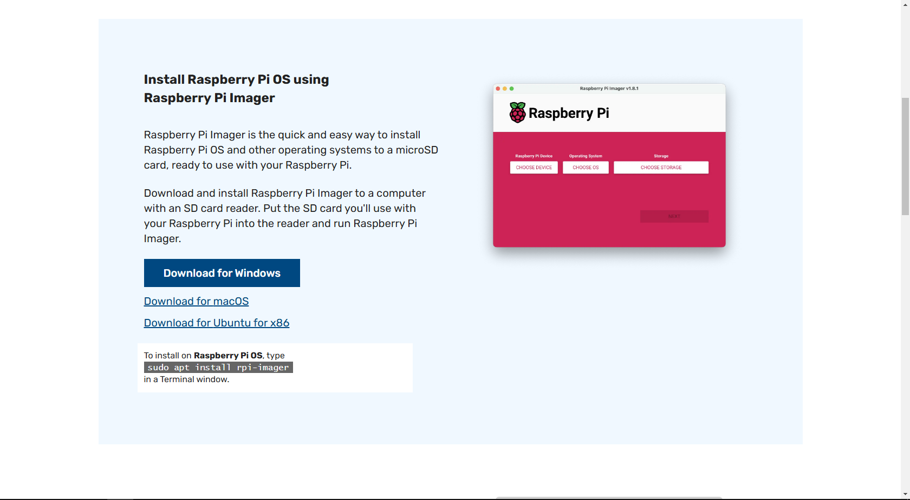İndirdikten sonra uygulamayı başlatın. Başlattıktan sonra "CHOOSE DEVICE" yada "CİHAZ SEÇİN" tuşuna tıklayıp Sahip olduğunuz "Raspberry Pi"ın modelini seçin.
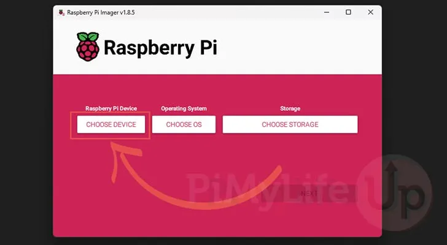Seçtikten sonra "CHOOSE OS" yada "İŞLETİM SİSTEMİ SEÇİN" tuşuna tıklayın.
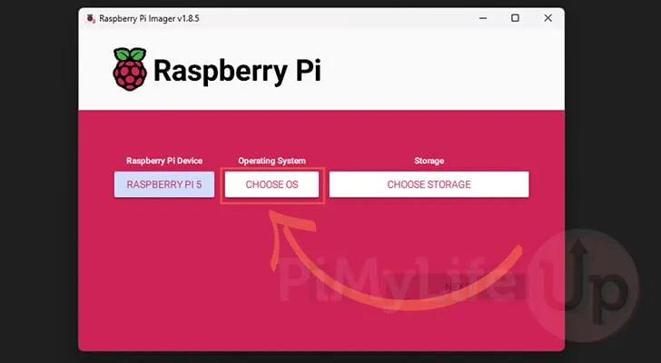Açılan menüden "Other specific-purpose OS" tuşuna tıklayın.
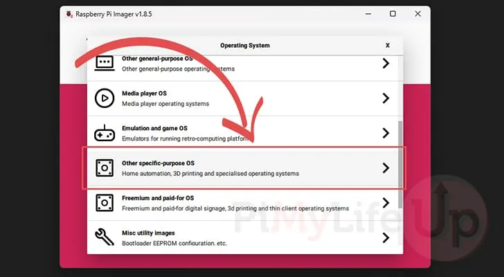Daha sonra "Home assistants and home automation" tuşuna tıklayın.
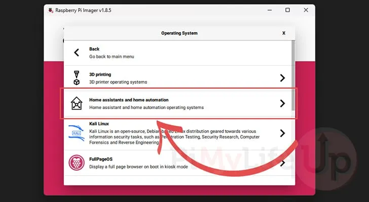Açılan pencereden "Home Assistant"ı seçin.
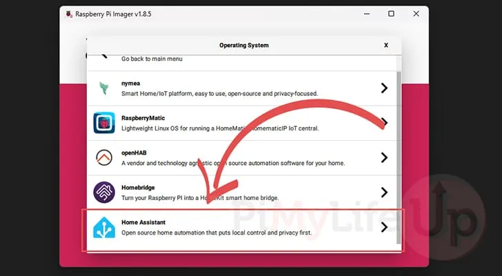Yine açılan pencereden "Home Assistant OS"i seçin.
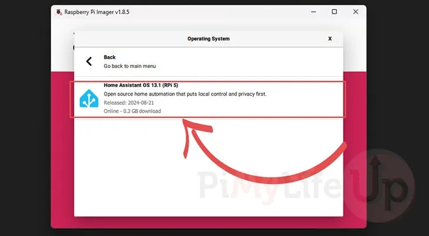Bilgisayarınıza bir sd kart takın. Bu seferde "CHOOSE STORAGE" yada "SD KARSEÇİN" tuşuna tıklayıp taktığınız sd kartı seçin.
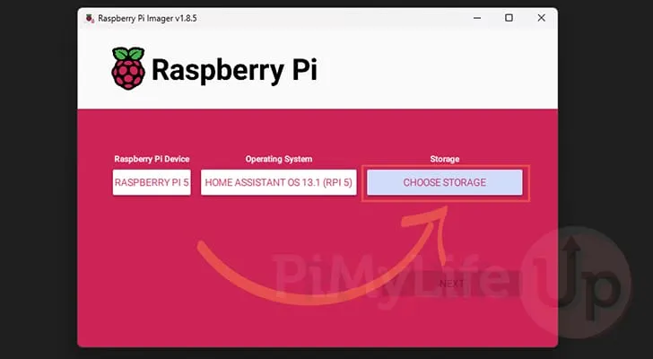Ve "NEXT" tuşuna tıklayın. Ve yazdırmasını bekleyin.
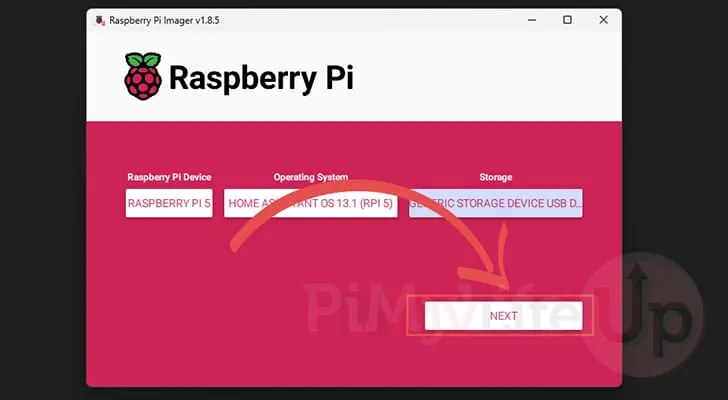2 - İlk kurulum
SD kartınızı Raspberry Pi'nize takın ve ethernet kablosuyla internete bağlayın. Raspberry'nize güç verin. Bilgisayarınızdan "http://homeassistant.local:8123" sitesine gidin. Eğer "Siteye Ulaşılamıyor" hatası veya aşağıdaki gibi bir ekran görüyorsanız en az 20 dakika beklemeyi deneyin.
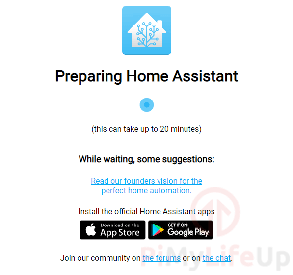Home Assistant'ın ilk önyüklemesi tamamlandıktan sonra web tarayıcınızı yenilemeniz gerekebilir.
İlk olarak sizden Home Assistant yazılımı için bir kullanıcı oluşturmanız istenecektir.
Bilgilerinizi girin. Ve ardından "CREATE ACCOUNT" tuşuna tıklayın.
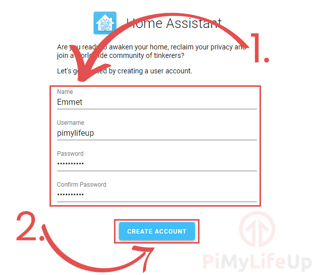Bir sonraki adımda size evinize bir ad vermeniz istenecektir.Ayrıca konumunuzu ayarlamanız gerekecektir. Konumunuzu ayarlamak, yazılımın güneşin konumunu hesaba katan otomasyon görevlerini ele almasına yardımcı olur.
Sonra, kullandığınız birim sistemini seçmeniz gerekir .Varsayılan olarak bu, "Metric" olarak ayarlanır.
İşlem tamamlandıktan sonra "NEXT" tuşuna tıklayın.
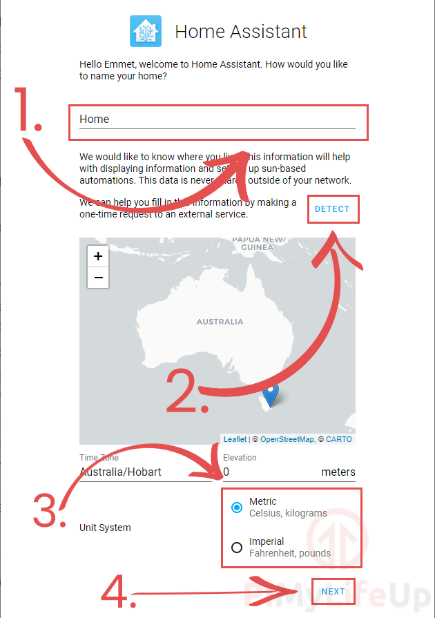Artık Home Assistant yazılımının daha önce algıladığı cihazların bir listesi karşınıza çıkacak. "+" düğmesine basarak cihazları ekleyebilirsiniz veya "FINISH" tuşuna tıklayarak devam edebilir siniz.
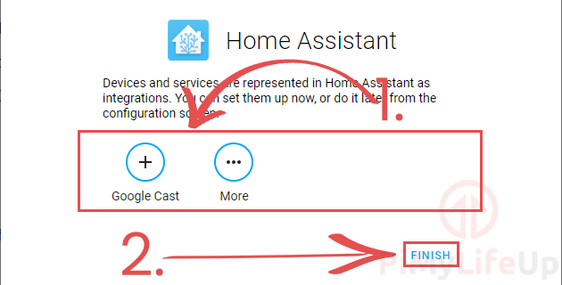Artık Raspberry Pi'nizde Home Assistant yazılımının ilk kurulumunu başarıyla tamamladınız.
Artık varsayılan Home Assistant panosunu göreceksiniz; ne kadar çok entegrasyon eklerseniz panonuzda o kadar çok bilgi göreceksiniz.
3 - Ek Entegrasyonlar Ekleme
Ek entegrasyonlar eklemek için kenar çubuğundaki "Configuration" öğesine tıklayın.
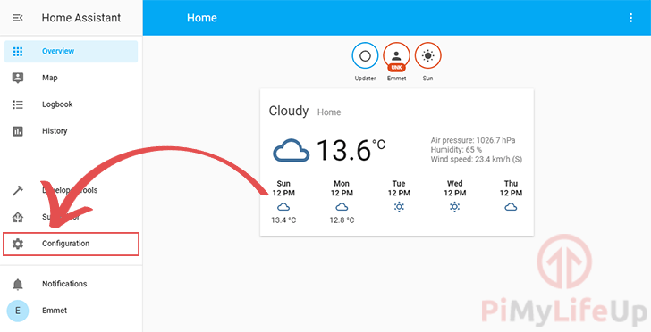Sırada "Integrations" kısmına tıklamak var.
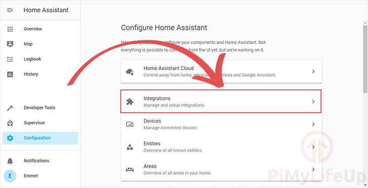Bir sonraki ekranda, Home Assistant'ın Raspberry Pi'nizden otomatik olarak algıladığı tüm cihazları göreceksiniz ( 1. )
Belirli bir cihazı veya entegrasyonu görmüyorsanız, ekranın sağ alt köşesindeki artı simgesine tıklayarak bunları kendiniz ekleyebilirsiniz. ( 2. )
Bu, Home Assistant yazılımı aracılığıyla kullanılabilen farklı entegrasyonları aramanıza olanak tanıyan bir arama menüsü açacaktır.
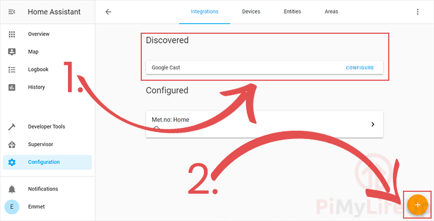